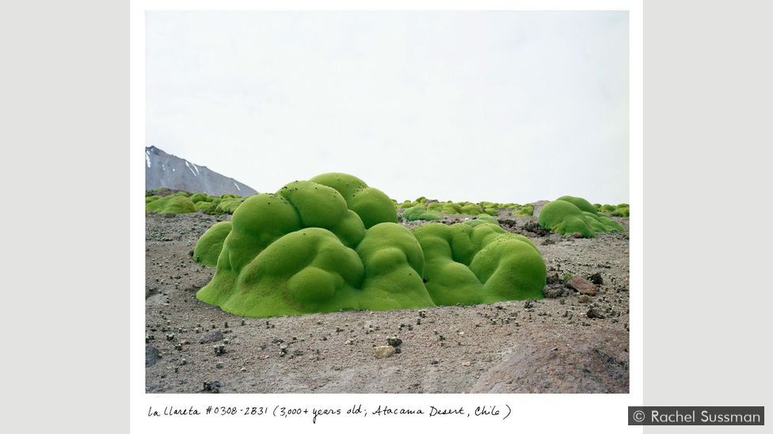
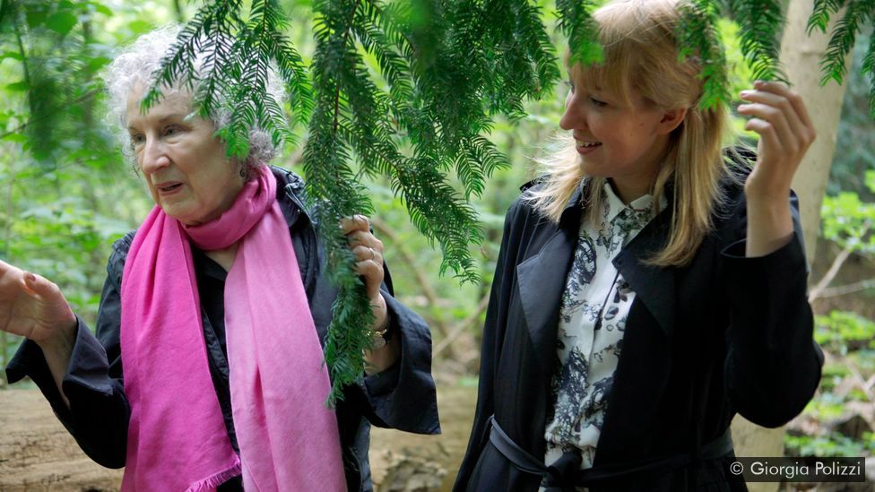
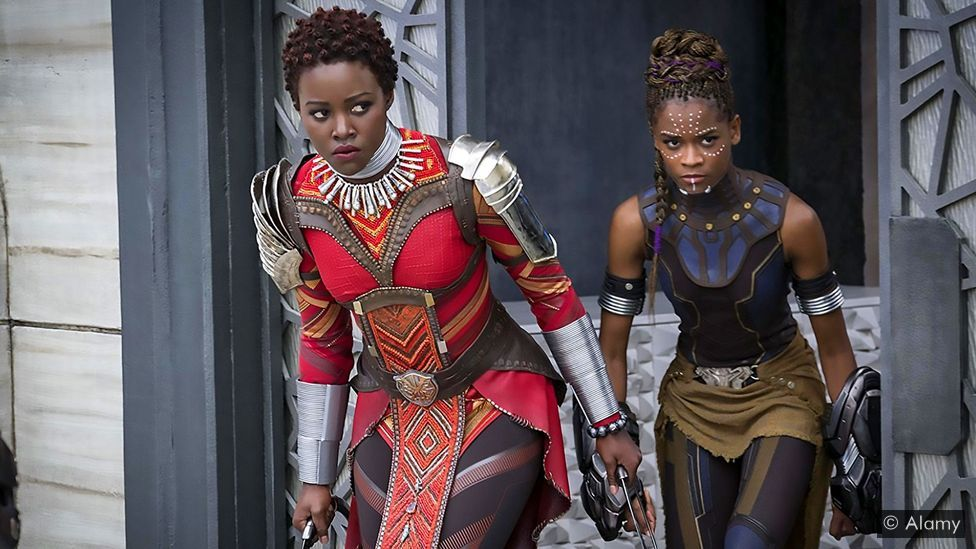

By Ella Saltmarshe and Beatrice Pembroke
There is a line in Hamlet where the prince of Denmark declares, The time is out of joint.
Shakespeare might have written these words yesterday, not more than 400 years ago, for we live in a world where our perception of time is dislocated. Humanity should be acting to preserve its long-term future. Instead, short-term mindsets and structures dominate. We focus on the present day while neglecting problems that will endure for centuries – from climate change to ecological collapse.
For most of human history we haven’t needed to think long-term. It wasn’t very useful when we were avoiding attacks from sabre-toothed tigers, desperately foraging for breakfast on the forest floor and surviving extreme weather conditions. As futurist Jamais Casio puts it, In a world of constant, imminent existential threats, the ability to recognise subtle, long-term processes and multi-generational changes wasn't a particularly important adaptive advantage.
Yet today, the nature of risk has changed. We no longer live in a world of clear, local cause and effect, and the greatest threats to civilisation are happening on the timescale of decades or centuries.
To avoid these dangers, we can’t wait for our Neolithic mental functions to play evolutionary catch-up, so we need to supplement them. While our minds might be not be wired to deal with long-term threats and priorities in the abstract, they are wired for two things that we can control: story and emotion. Our predisposition towards story, and the deeply emotional nature of our decision-making, makes art and culture foundational to ensuring our future as a species.
That’s why we have established an initiative called the Long Time Project, which champions art and culture as a route to helping people think and act more long-term. This is about everything from the YouTube videos we watch, to the adverts we scroll past, to the box-sets we binge, to the art exhibitions we attend, to the theatre we see, to the clothes we wear and the furniture we use. All these art forms and creative works are shaped by small c
culture: the collective values, norms and narratives that underpin and drive our societies. This culture shapes our collective direction of travel, from the kinds of laws we make, to the technology we develop, to the way we distribute wealth.
Timefulnessis the ability to locate ourselves within eras and eons, rather than weeks and months
So, how exactly can art and culture in this broadest sense expand our perception of time and the future?
Art can stretch our time frames, helping us develop what geologist Marcia Bjornerud calls timefulness
: the ability to locate ourselves within eras and aeons, rather than weeks and months.
There is a growing body of deep time work that locates us in the epic geological history of the Universe, evoking awe and wonder. Photographer Rachel Sussman’s book The Oldest Living Things in the World contains photographs of organisms more than 2,000 years old, like the Pando, a quaking aspen tree that has formed a forest-sized colony by cloning itself continuously for the past 80,000 years.
As Sussman said in an interview with the Marina Abramovic Institute: My use of deep time is about creating perspective and differentiating between the shallowness of human timescales and the depth of natural, geologic, and cosmic timescales. It's really meant as a way of shifting our perspective… Somewhere along the way I came to the thought that every problem – personal, societal, anything – can benefit from long-term thinking. It’s a simple idea, but it asks you to slow down and consider long-term consequences before acting.
Every problem – personal, societal, anything – can benefit from long-term thinking
Sussman is not alone in her fascination with deep time. Artist-technologist Honor Harger has created a soundscape of the history of the Universe that enables you to hear the oldest song you’ll ever hear
: the sounds of the cosmic rays left over from the Big Bang. In , the National Academy of Sciences in Washington DC hosted an exhibition called Imagining Deep Time. And then there is the Deep Time walk, an app produced by a scientist, a playwright and a sound designer that enables people to walk 4.6km through 4.6 billion years of history.
Other artists are stretching our time frames forwards, directly engaging with the far future. The Long Now Foundation is building a clock designed to run for 10 millennia inside a mountain in Texas (read more about the Clock of the Long Now). And the Longplayer project is a self-extending composition with Tibetan bowls designed by Jem Finer which started on and will go on without repetition until .
Meanwhile, in , artist Katie Paterson created Future Library, a forest planted in Norway which will supply paper for a special anthology of books to be printed in 100 years’ time; Margaret Atwood was the first author to hand over a manuscript that won’t be read for a century.
All of these works stretch our perspectives, expand our time frames and help us relocate our existence in much more epic territory.
Speculative fiction is another way we can stretch our time frames through culture. From ancient Indian vedas to the medieval Christian obsession with apocalypse, from Twenty Thousand Leagues Under the Sea to Blade Runner, we’ve been pondering the future for thousands of years. Dystopian visions like The Handmaid’s Tale, The Road, or Children of Men cause us to re-examine the elements of the present that might be taking us towards nightmare scenarios.
Recently, designers and artists have sought to create visceral, immersive works that give people a more direct experience of the darker, more dystopian planet we might face if we don’t start thinking longer-term. In , the design studio Superflux created samples of what the polluted air of would smell like if nothing changed, and at a live event in the United Arab Emirates invited policy-makers and senior politicians to inhale them. In the words of Superflux co-founder Anab Jain, Just one whiff of the noxious polluted air from brought home the point that no amount of data can.
Another Superflux installation in Barcelona, Mitigation of Shock, transported people decades into the future into an apartment, set in London, that has been drastically adapted for living with the consequences of climate catastrophe. In Jain’s words: We explored, designed and built an apartment located in a future no one wants, but that may be on the horizon. Not to scare, or overwhelm, but to help people critically reflect upon their actions in the present.
For more positive visions of the future, take a film like Black Panther, which shows a thriving environmentally-friendly, technologically advanced African civilisation that has never been colonised. Building on the work of writers like Octavia Butler, who placed people of colour at the heart of science fiction, the film enables us to explore a future that moves beyond present-day prejudices. As the second-highest grossing film of and the most tweeted about movie ever, this kind of speculative work clearly has the potential to influence our collective trajectory.
On a much more local scale, projects like Forest of the Future in London’s Waltham Forest features speculative art and design work about the borough, such as screen-prints of future local by-laws by designer Cat Drew, to help decision-makers – politicians, citizens, consumers, voters, businesses – think about what a better future can look like, and how to achieve it.
The genius of art and culture is that it allows us to experience ideas about the future on an emotional and embodied level, not just an intellectual one. Take Olafur Eliasson’s recent Ice Watch, in which he transported melting glacial ice from the Arctic to London where the public could see and touch the blocks. I believe that one of the major responsibilities of artists – and the idea that artists have responsibilities may come as a surprise to some – is to help people not only get to know and understand something with their minds but also to feel it emotionally and physically,
Eliasson wrote in a article for Huffpost.
Often questions about the long-term future can feel distant and hard for people to translate into meaningful action in the context of their lives. It’s one thing to watch Black Panther in the cinema, and another to know what its vision of the future means in the context of your own life. Art and culture can not only help us experience the long view, but can provide reflective space to enable us to take action based on that understanding.
Somerset House’s recent Earth Day season exemplifies this approach with its focus on the role of language and storytelling inpromoting collective action on the global climate crisis
. Its mixture of immersive installations, screenings, workshops and debates enabled the public to both explore and reflect. In the words of the founder of the Climate Museum Bridget McKenzie: We need to move beyond seeing arts and culture in service to communication of climate action, to thinking of it as a transformative and generative agent.
We Know Not What We May Be was a project at the Barbican in London developed by Zoë Svendsen of the arts organisation Metis. After a 20-minute talk from expert speakers from fields like economics, geography and environmental science, the public was invited to explore what it would be like to live in an alternative economic future, based on a fictional scenario devised from one of these experts’ research. In an immersive factory of the future
they grappled with their role in the shape of the future through storytelling and experimentation. In the words of Svendsen, the arts can invite us to take on ways of operating without having to commit to them
.
Or there’s the work of interactive theatre company Coney, whose piece Early Days (of a better nation) involved no actors, only a participating audience who were told: The war is over and the nation lies in ruins. You and your fellow survivors must build the beginnings of a new country. What are the rules you’re going to live by? And can you avoid the mistakes of the past?
The audience had to explore how they might organise themselves and run a country, testing and playing with new behaviours and scenarios.
It’s likely that acting in the interests of the long term will involve radical change in the short term. It will involve rocking the boat, going against the norm, doing things very differently. Art and culture can help us do this in many ways: by connecting us with previous moments of change to make the radical feel more possible, by challenging the inevitability of the status quo, and by making radically different worlds feel tangible.
Art and culture can remind us that radical change has happened in the past. It can both inspire us as to the scale of previous change and it can remind us of the values and behaviours needed to make change happen. For example, drama that retells previous movements of change like gay rights (Milk), civil rights (12 Years a Slave), or women’s rights (Suffragette) can make us feel more courageous, willing to put more on the line and take action.
It can feel like the world we live in is the only option. Art and culture can expose us to a multiplicity of possible futures
Art can also help us challenge the status quo. Cultural theorist Mark Fisher wrote of art’s role in challenging the monopolisation of possible realities
. It can feel like the world we live in is the only option. Art and culture can expose us to a multiplicity of possible futures.
Take Economic Science Fictions, a new anthology exploring how science fiction can motivate new approaches to economics, or A People’s Future of the United States, with speculative stories that challenge opppression and envision new futures for the US. Speculative work can liberate us from the confines of pragmatism and to dream new futures. Fictions can fuel the future.
Culture also has the power to rapidly transport us out of the confines of everyday life to create embodied experiencesof different possible futures. Back in the 1960s, the Situationists, a group of artists in Paris, pioneered work that created moments to jolt people out of their usual ways of thinking and acting. They demonstrated that art and culture can create spaces that temporarily suspend the established order, norms, and privileges. This was a facet of the recent Extinction Rebellion climate protests in the UK, which used art and culture to transform the roads and bridges they occupied in central London. The striking pink boat in Oxford Circus, Samba bands, poetry, and impromptu performances from musicians all contributed to creating spaces that felt radically different from the norm.
Ultimately, we believe that challenging short-termism will involve reauthoring some of the deeper narratives that animate our society, the collective beliefs that shape our direction of travel – from narratives about our place in the natural order of things to those which drive our economic paradigms. The stories we live in justify the status quo, make institutions feel inevitable, legitimise certain kinds of solutions, and make our world feel preordained. These cultural narratives are often foundational to the structures that incentivise short-termism, whether at the individual, political, corporate or financial level. For examples of this kind of narrative shift work, see recent work on poverty by the Joseph Rowntree Foundation, the oceans by the Calouste Gulbenkian Foundation, and The Pop Culture Collaborative, which is underpinned by the belief that activists, artists, and philanthropists can encourage mass audiences to reckon with the past and rewrite the story of our nation’s future.
Culture is foundational. It is the soil from which our civilisations grow. If we want to ensure that humans have a long, thriving future on this planet, then we need to work at the level of culture as well as politics, science, technology, finance and infrastructure. If we can work with art and culture to stretch our time frames so that we care about the long-term future, then hopefully as a species, we will have a future in the long term.
Ella Saltmarshe and Beatrice Pembroke are the founders of the Long Time Project, which champions art and culture as a route to helping people think and act more long-term. It is a new multidisciplinary initiative involving the creative and cultural industries, the humanities, science, media and business. Twitter: @LongTimeProject